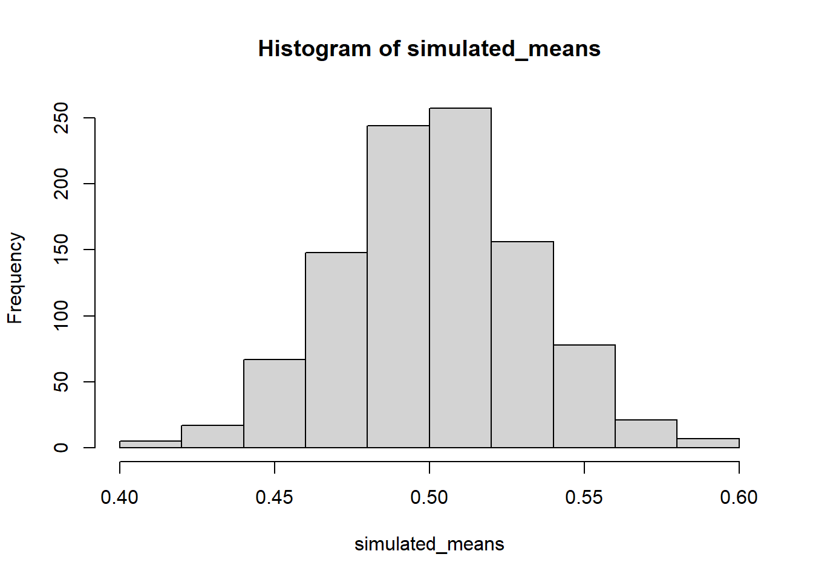

library(data.table) #loads data table library
all_data <- fread("https://raw.githubusercontent.com/CrumpLab/statisticsLab/master/data/MehrSongSpelke2016.csv") #loaded data via web address, easier than downloading data fileFinal Project: T-test [Lab10] (one-sample, paired sample)
Research Question:
The lab study uses open data from Experiment 1 of Mehr, Song, and Spelke (2016). This is a reproduction of the results found in their paper. The experiment asks ‘Does music convey social information to infants?’. Different infants may grow up in different cultures and thus, the songs they are exposed to will differ. Following this pattern, when someone new sings a familiar song to an infant, it may signal that this person is part of their social group (Mehr et al., 2016).
Data-Sources
https://journals.sagepub.com/stoken/default+domain/d5HcBHg85XamSXGdYqYN/full
https://raw.githubusercontent.com/CrumpLab/statisticsLab/master/data/MehrSongSpelke2016.csv
Loading the data
library(summarytools) #use to summarize all data
view(dfSummary(all_data)) #will show summary of all dataSwitching method to 'browser'Output file written: C:\Users\gabiy\AppData\Local\Temp\RtmpCAPOs2\file33ec57f82945.htmllibrary(dplyr)
Attaching package: 'dplyr'The following objects are masked from 'package:data.table':
between, first, lastThe following objects are masked from 'package:stats':
filter, lagThe following objects are masked from 'package:base':
intersect, setdiff, setequal, unionexperiment_one <- all_data %>% filter(exp1==1) #filtering data to reduce rows into a new variableOne Sample T-test [Baseline]
#data from trials to show infant looking behavior didn't change due to chance
baseline <- experiment_one$Baseline_Proportion_Gaze_to_Singer#looking at numbers, shows all data point for each infant as dot
plot(baseline)#hist to show frequency proportions better
hist(baseline)Descriptives
#mean and standard deviation for sample
mean(baseline)[1] 0.5210967sd(baseline)[1] 0.1769651T-test
t.test(baseline, mu=.5) #reported as "t(31) = .67, p = .505."
One Sample t-test
data: baseline
t = 0.67438, df = 31, p-value = 0.5051
alternative hypothesis: true mean is not equal to 0.5
95 percent confidence interval:
0.4572940 0.5848994
sample estimates:
mean of x
0.5210967 Test Phase
test_phase <- experiment_one$Test_Proportion_Gaze_to_Singer
plot(test_phase)hist(test_phase)mean(test_phase)[1] 0.5934913## [1] 0.5934913
sd(test_phase)[1] 0.1786884## [1] 0.1786884
t.test(test_phase, mu = .5)
One Sample t-test
data: test_phase
t = 2.9597, df = 31, p-value = 0.005856
alternative hypothesis: true mean is not equal to 0.5
95 percent confidence interval:
0.5290672 0.6579153
sample estimates:
mean of x
0.5934913 Paired-samples T-test
t.test(test_phase, baseline, paired=TRUE, var.equal=TRUE)
Paired t-test
data: test_phase and baseline
t = 2.4164, df = 31, p-value = 0.02175
alternative hypothesis: true mean difference is not equal to 0
95 percent confidence interval:
0.01129217 0.13349698
sample estimates:
mean difference
0.07239458 t.test(test_phase, baseline, paired=TRUE, var.equal=TRUE)
Paired t-test
data: test_phase and baseline
t = 2.4164, df = 31, p-value = 0.02175
alternative hypothesis: true mean difference is not equal to 0
95 percent confidence interval:
0.01129217 0.13349698
sample estimates:
mean difference
0.07239458 difference_scores<-test_phase-baseline
t.test(difference_scores, mu=0)
One Sample t-test
data: difference_scores
t = 2.4164, df = 31, p-value = 0.02175
alternative hypothesis: true mean is not equal to 0
95 percent confidence interval:
0.01129217 0.13349698
sample estimates:
mean of x
0.07239458 Other source
difference_scores <- test_phase-baseline
length(difference_scores[difference_scores>0])[1] 22Graphing Findings
#creating dataframe for plotting
Phase <- rep(c("Baseline","Test"), each = 32)
Proportions <- c(baseline,test_phase)
plot_df <- data.frame(Phase,Proportions)
plot_df Phase Proportions
1 Baseline 0.4371257
2 Baseline 0.4125326
3 Baseline 0.7544910
4 Baseline 0.4388778
5 Baseline 0.4746450
6 Baseline 0.8709016
7 Baseline 0.2367150
8 Baseline 0.7592593
9 Baseline 0.4163347
10 Baseline 0.7995338
11 Baseline 0.3786765
12 Baseline 0.6978922
13 Baseline 0.5934066
14 Baseline 0.6149068
15 Baseline 0.6149068
16 Baseline 0.3168317
17 Baseline 0.3104167
18 Baseline 0.5043668
19 Baseline 0.4693396
20 Baseline 0.5040816
21 Baseline 0.5640327
22 Baseline 0.2566372
23 Baseline 0.7000000
24 Baseline 0.3823529
25 Baseline 0.3718593
26 Baseline 0.2844639
27 Baseline 0.7678161
28 Baseline 0.4737864
29 Baseline 0.8212181
30 Baseline 0.5901639
31 Baseline 0.4220374
32 Baseline 0.4354839
33 Test 0.6027398
34 Test 0.6830266
35 Test 0.7241379
36 Test 0.2816538
37 Test 0.4985423
38 Test 0.9509202
39 Test 0.4177546
40 Test 0.9382023
41 Test 0.5000000
42 Test 0.5862944
43 Test 0.4726225
44 Test 0.5083799
45 Test 0.8111888
46 Test 0.5718015
47 Test 0.7774481
48 Test 0.2628458
49 Test 0.5079365
50 Test 0.4369748
51 Test 0.5421053
52 Test 0.6008968
53 Test 0.4186747
54 Test 0.7894737
55 Test 0.7601078
56 Test 0.6238938
57 Test 0.3664122
58 Test 0.4615385
59 Test 0.8995215
60 Test 0.5311005
61 Test 0.5418994
62 Test 0.7003891
63 Test 0.7629629
64 Test 0.4602740Plot of Raw Scores
library(ggplot2)
ggplot(plot_df, aes(x=Phase, y=Proportions))+
geom_point()Plot of Raw Scores + Means
mean_df <- aggregate(Proportions ~ Phase, plot_df, mean)
ggplot(plot_df, aes(x=Phase, y=Proportions))+
geom_point()+
geom_point(data=mean_df, color="Red", size=2)Bar Plot
ggplot(plot_df, aes(x=Phase, y=Proportions))+
geom_point()+
geom_bar(data=mean_df, stat="identity",aes(fill=Phase))ggplot(plot_df, aes(x=Phase, y=Proportions))+
geom_bar(data=mean_df, stat="identity",aes(fill=Phase))+
geom_point()Bar Plot + Error bars
difference_scores <- baseline-test_phase #calculate difference scores
standard_error <- sd(difference_scores)/sqrt(length(difference_scores)) #calculate SEM
ggplot(plot_df, aes(x=Phase, y=Proportions))+
geom_bar(data=mean_df, stat="identity",aes(fill=Phase))+
geom_errorbar(data=mean_df, aes(ymin=Proportions-standard_error,
ymax=Proportions+standard_error), width=.1) +
geom_point(alpha=.25)difference_scores <- test_phase-baseline #calculate difference scores
standard_error <- sd(difference_scores)/sqrt(length(difference_scores)) #calculate SEM
mean_difference <- mean(difference_scores)
qplot(x="MeanDifference", y=mean_difference)+
geom_bar(stat="identity", width=.5, alpha=.5)+
geom_hline(yintercept=0)+
geom_point(aes(y=difference_scores), alpha=.25)+
geom_errorbar(aes(ymin=mean_difference-standard_error,
ymax=mean_difference+standard_error), width=.1)Warning: `qplot()` was deprecated in ggplot2 3.4.0.Bar Plot + Confidence Intervals
t_test_results <- t.test(difference_scores)
lower_interval<- t_test_results$conf.int[1]
upper_interval<- t_test_results$conf.int[2]
qplot(x="MeanDifference", y=mean_difference)+
geom_bar(stat="identity", width=.5, alpha=.5)+
geom_hline(yintercept=0)+
geom_point(aes(y=difference_scores), alpha=.25)+
geom_errorbar(aes(ymin=lower_interval,
ymax=upper_interval), width=.1)
Data Simulation
sample_sd <- (sd(baseline)+sd(test_phase))/2
simulated_means <- length(1000)
for(i in 1:1000){
simulated_means[i] <- mean(rnorm(32,.5, sample_sd))
}
hist(simulated_means)
#simulation of mean difference
sample_sd <- sd(baseline-test_phase)
simulated_mean_difference <- length(1000)
for(i in 1:1000){
simulated_mean_difference[i] <- mean(rnorm(32,0, sample_sd))
}
hist(simulated_mean_difference)References
Mehr, S. A., Song. L. A., & Spelke, E. S. (2016). For 5-month-old infants, melodies are social. Psychological Science, 27, 486-501.
Crump, M. J.C., Krishnan, A., Volz, S., Chavarga, A. (2018). Answering questions with data: Lab Manual.
https://crumplab.com/statisticsLab/lab-6-t-test-one-sample-paired-sample.html#excel-6
https://journals.sagepub.com/stoken/default+domain/d5HcBHg85XamSXGdYqYN/full